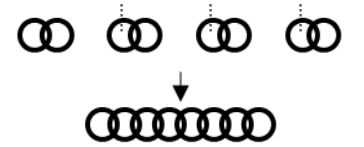
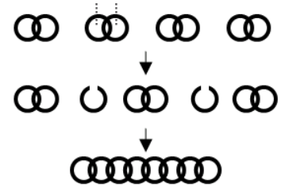

Một chuỗi xích bao gồm nhiều mắc xích được nối lại với nhau. Có n chuỗi xích với số lượng mắc xích trong từng chuỗi lần lượt là a1, a2, ..., an. Người ta muốn nối n chuỗi xích trên lại với nhau thành một chuỗi xích duy nhất bằng cách mở một số mắc xích để nối các chuỗi và sau đó hàn lại. Ví dụ bên dưới có 4 chuỗi xích, mỗi chuỗi có số lượng mắc xích là 2. Ta có thể mở 3 mắc xích để nối 4 chuỗi trên lại thành một. Tuy nhiên phương án tối ưu nhất chỉ cần mở 2 mắc xích.
 
Hãy tìm cách mở số lượng mắc xích ít nhất để nối n chuỗi xích trên thành một chuỗi duy nhất.
Dữ liệu nhập:
- Dòng thứ nhất là số nguyên n (2 ≤ n ≤ 105)
- Dòng thứ hai là n số nguyên a1, a2, ..., an. (1 ≤ ai ≤ 109) mỗi số cách nhau một khoảng trắng.
Dữ liệu xuất:
- Là số lượng mắc xích ít nhất cần mở.